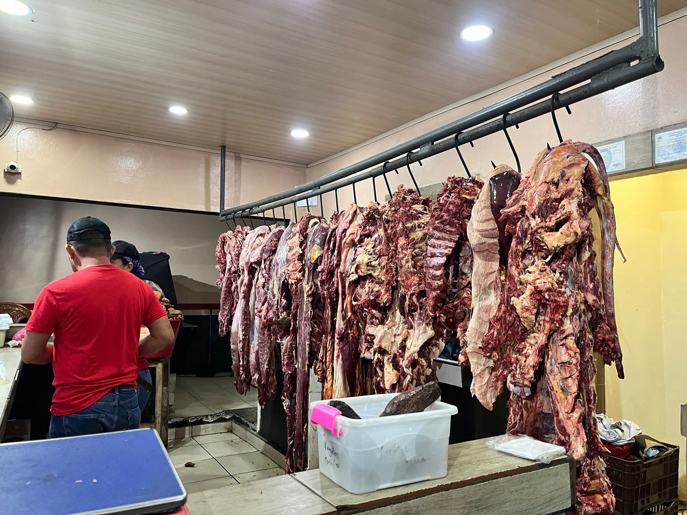

Más pedido
Chicharrón crocante
C$ 90 / lbCerdo frito lento en su propia manteca, dorado por fuera y jugoso por dentro.
Pedir por WhatsApp
Carnicería · Frutería · Chicharronería
En Los Pocitos, Rivas, freímos el chicharrón como se hace desde siempre: despacio, en su propia manteca, hasta que truena al primer mordisco.

Nuestra historia
FriCarne nació como una carnicería de vecindario en Los Pocitos y creció sumando frutería y una cocina propia de chicharrones. Cada res se despieza en casa, cada chicharrón se fríe el mismo día, y cada tajada se corta a mano antes de dorarse.
No trabajamos por volumen, trabajamos por confianza: la misma que nos permite colgar la carne a la vista, mostrar la fritura en la ventana y mirar a los ojos a quien nos compra hace años.
Carne y producto seleccionados cada mañana, sin congelados de relleno.
Chicharrón cocido lento en manteca propia, no en aceite reciclado.
Pedidos a la medida, al peso o por libra, como lo pida la casa.
La casa por dentro
Así se ve, se corta y se fríe todos los días.
Lo que dice el barrio
“El chicharrón sale calientito y sin exceso de grasa. Se nota que lo fríen con calma.”
— Cliente frecuente, Los Pocitos
“Compro la carne aquí porque la cortan al momento y explican bien cada corte.”
— Cliente de la zona
“Buena atención y la frutería siempre tiene producto fresco, no lo del día anterior.”
— Cliente habitual
Visítanos
Hablemos
Escribinos y coordinamos tu pedido o tu encargo especial.
Antes de escribirnos
Sí. Escribinos por WhatsApp con el corte, el peso aproximado y el día que lo necesitás, y te confirmamos disponibilidad y precio.
Se vende por libra, y también armamos combos individuales con tajadas y curtido para llevar.
Coordinamos entregas dentro de Los Pocitos y alrededores según disponibilidad. Consultá por WhatsApp antes de pedir.
Recibimos producto seguido durante la semana; si buscás algo puntual, escribinos y te decimos si hay en existencia.